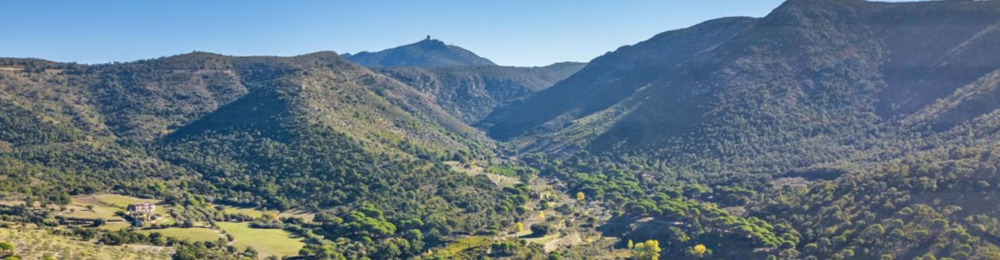

Ruta · Roses
A l'ombra del castell de Bufalaranya, un grapat de masos havien estructurat aquests vessants solells de la serra de rodes. Aquesta ruta transcorre pel fons de la vall del serrat de Can Berta, al…